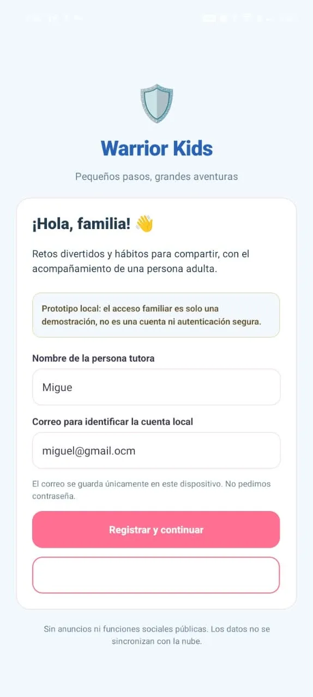
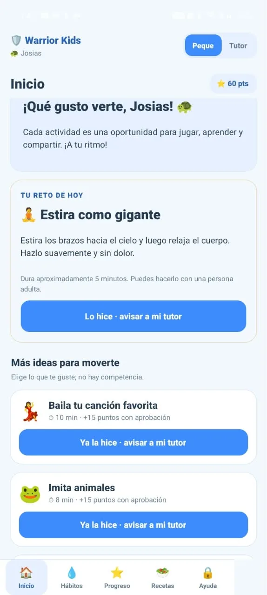
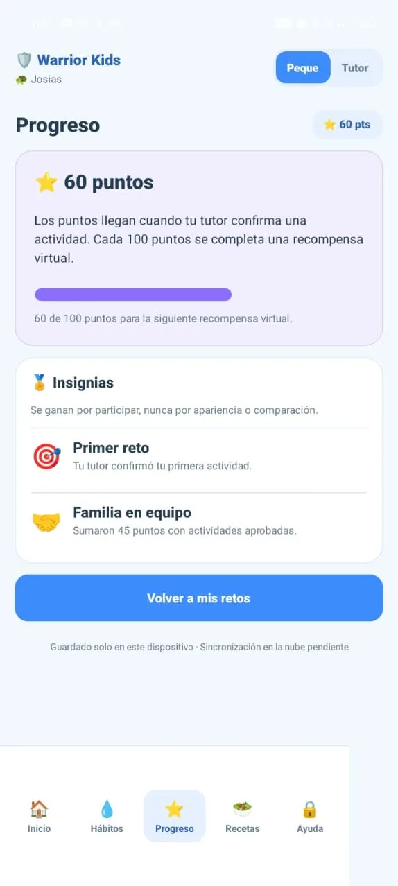
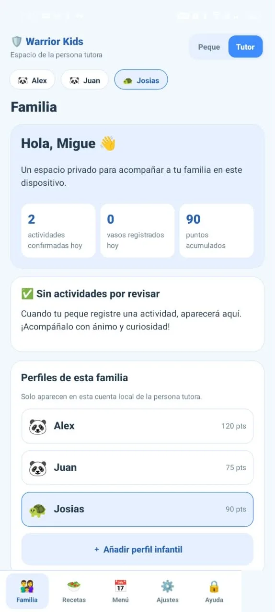

0%
Niñas y niños de 5 a 11 años
con sobrepeso u obesidad (ENSANUT 2022).
ITSZ · Ingeniería Informática
Warrior Kids es una app móvil gamificada que ayuda a niñas y niños de 6 a 12 años a moverse más, tomar agua y comer mejor, jugando y en compañía de su familia.




El reto que atendemos
En Zacapoaxtla, Puebla, el sedentarismo y la alimentación desequilibrada ya afectan la salud desde la infancia. Las cifras nacionales confirman que el problema sigue alto.
con sobrepeso u obesidad (ENSANUT 2022).
con sobrepeso u obesidad (ENSANUT 2022).
ENSANUT Continua 2020-2024: el nivel se mantiene alto (40.1 % en adolescentes).
El sobrepeso y el sedentarismo son el principal factor de riesgo de diabetes tipo 2 a edades cada vez más tempranas.
En regiones semirrurales crece su consumo y hay poco acceso a educación nutricional adaptada.
La mayoría usa un seguimiento tedioso para niños, deja fuera a los padres y no tiene enfoque regional.
Origen del proyecto
El trabajo de campo se hizo en la primaria Carlos I. Betancourt Molina, en el centro de Zacapoaxtla, con alumnos de quinto y sexto grado.
6 grupos escolares en el grupo focal
Miramos el entorno y los hábitos dentro de la comunidad escolar. Confirmó el sedentarismo y los malos hábitos alimenticios.
Preguntamos por sus gustos y lo que hacen en casa. Faltaban herramientas que los motivaran sin sentirlo como obligación.
Conversamos sobre rutinas y formas de jugar. De ahí salen la gamificación, las rutinas con nombres divertidos y la evaluación de usabilidad.
Toca cada tarjeta para ver cómo respondimos.
La app, versión 3.1
Con un toque se cambia entre el modo Peque, para la niña o el niño, y el modo Tutor, para la persona adulta que acompaña. Estas son pantallas reales del APK.
Modo Peque
Lo que hace
Registra y supervisa a cada menor, confirma actividades y configura alergias y preferencias alimenticias.
Recetas y plan semanal de desayuno, comida y cena con el Plato del Bien Comer y la cocina mexicana.
Sesiones de 10 a 15 minutos de cardio, fuerza y flexibilidad con dinámicas de juego.
XP, niveles, misiones diarias, rachas como la “Semana de fuego” e insignias como “Hidratacionista” y “Caminante”.
Registro del estado de ánimo y un asistente con respuestas guiadas que funciona dentro del teléfono.
Constructor con piel, cabello, ropa, accesorio y fondo, con vista previa al instante.
Las rutinas suman hacia la meta de la OMS: 60 minutos diarios de actividad para niñas y niños de 5 a 17 años.
Pruébalo aquí
Una muestra interactiva de la lógica del prototipo: el peque avisa, el tutor confirma y llegan los puntos. Cada 100 puntos se completa una recompensa virtual.
60 de 100 puntos para la siguiente recompensa virtual.
0 de 5 vasos de la meta familiar.
No hay respuestas buenas o malas.
Recetario en familia
Ideas sencillas con alimentos comunes en Zacapoaxtla. El Plato del Bien Comer es una guía para aprender, no una dieta médica.
Verduras y frutas · cereales · alimentos de origen animal
Verduras y frutas · cereales · leguminosas
Verduras y frutas · cereales
Cereales · verduras y frutas
Evolución
El mayor reto de la primera versión fue aprender un lenguaje nuevo sin saber por dónde empezar. Cada versión sumó algo que pidieron los usuarios.
Estructura mínima, verde para transmitir salud y naturaleza, pocas funciones y un solo usuario.
Perfil de niño o niña con su nombre, paleta pastel y modo claro y oscuro.
Panel para padres, alergias y preferencias, Plato del Bien Comer, rutinas y gamificación.
Nueva pantalla principal, chat con el asistente NutriBot, datos guardados en el dispositivo, versión previa conservada y APK para Android.
Un pediatra, un nutriólogo y docentes de educación física revisarán contenidos, tiempos de pantalla y rutinas.
Cómo está hecha
Elegimos React Native con Expo para desarrollar para ambos sistemas desde una base común, probar en teléfonos reales con Expo Go y trabajar solo con software libre.
src/app/index.tsxPantalla principal de Warrior Kidssrc/app/familiar.tsxVersión anterior, como respaldosrc/constants/theme.tsPaleta y tema visualapp.jsonNombre, slug y Androidpackage.jsonDependencias y compatibilidad EASREADME.mdDocumentación general del proyectodist/Warrior kids.apkAPK final para AndroidPrivacidad y normas
Warrior Kids es una herramienta educativa y preventiva. No diagnostica ni trata enfermedades y no sustituye a profesionales de la salud.
Los datos se guardan solo en el dispositivo.
Sin anuncios ni funciones sociales públicas.
NutriBot responde sin enviar datos a servicios externos.
Ningún punto premia el peso o la apariencia.
El tutor acuerda el tiempo de uso diario.
Define el Plato del Bien Comer con tres grupos de alimentos y pide adaptar la orientación al contexto local. Es la base del recetario, el menú semanal y el módulo de nutrición.
La app no presenta como saludable un producto con sellos y enseña a leerlos. Sus personajes no se asocian a productos de marca.
Prohíben la comida chatarra en las escuelas. El recetario prioriza alimentos regionales y la app refuerza el hábito de tomar agua.
El tratamiento lo conducen profesionales. La app solo previene y educa: no diagnostica, no trata y no fija metas de peso.
Al menos 60 minutos diarios de actividad moderada a vigorosa. Las rutinas de 10 a 15 minutos se acumulan hacia esa meta.
Aplicamos una regla más estricta: consentimiento del tutor, asentimiento del menor, datos mínimos y cero publicidad conductual infantil.
Método y calidad
Evaluación con el cuestionario SUS (System Usability Scale) y pruebas de caja negra, con 10 a 15 parejas tutor-menor del grupo focal. Referencias: ISO/IEC 25010, 12207 y 29119.
Quiénes la hacemos
Cinco estudiantes de Ingeniería Informática del Instituto Tecnológico Superior de Zacapoaxtla.
Gerente de proyecto
Desarrollo
Desarrollo
Aseguramiento de la calidad
Operaciones